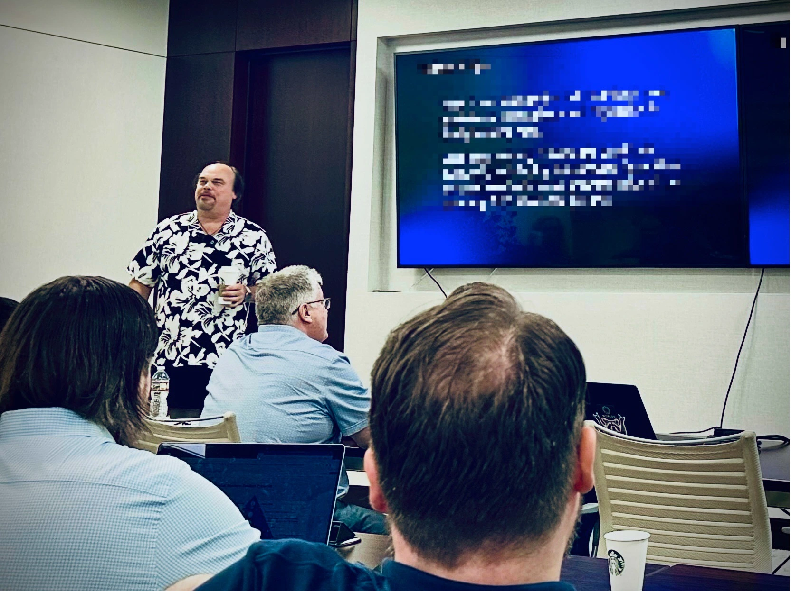

I’ve joined Worlds to lead Product Experience, helping shape the way users interact with one of the most ambitious AI platforms in the industry.
This role brings together everything I love: product strategy, front-end leadership, and design vision, all focused on making powerful, complex systems feel intuitive and human. The platform Worlds is building goes far beyond what’s currently possible in computer vision and automation, and I’m excited to play a part in how it comes to life.
Why Worlds?
From the moment I first explored what the team at Worlds was working on, I knew it wasn’t just another AI company. This is a team rethinking how people interact with live environments; not just capturing footage or triggering alerts, but building dynamic models that can observe, interpret, and act on what’s happening in real time.
It’s the kind of platform that sounds like science fiction, but it’s already being deployed by major enterprises to solve real-world challenges.
What excited me most was the chance to shape how people experience this technology. The UI is just the surface, underneath is a layered system of intelligence and inference that needs to be understood, trusted, and used by people in high-stakes environments.
That’s where my work begins.
First Impressions

My first week couldn’t have been better timed! I joined during a company-wide event, met the entire team in person, and got a full download of what’s happening across engineering, product, and design. It’s a rare chance to come in during a moment of reflection and re-alignment.
It also felt like a bit of a homecoming. I’m reuniting with a few of my favorite past collaborators, including Markie Arnold and Kevin Marvin, and we’ve already started identifying opportunities to improve workflows, simplify interfaces, and level up the front-end and product experience across the board.
What’s Next
We’re kicking off projects around:
- Modernizing our design system and Figma practices
- Strengthening the front-end architecture for scale and velocity
- Building tighter feedback loops between UX, engineering, and field teams
- Exploring how AI agents, visual models, and user goals come together in a single experience
At the same time, I’m resetting my own workflows, keeping my new work setup separate from personal projects like BoxBoard, and setting up a clean, AI-friendly environment that encourages automation and experimentation.
There’s more I want to share soon: from thoughts on MCP and agent tooling, to how we’re thinking about user trust in intelligent systems, to lessons from doing a full rewrite of BoxBoard’s iOS app (more on that later).
For now, I’m just excited to be here, surrounded by good people, big ideas, and the kind of problems that don’t have easy answers — just meaningful ones.